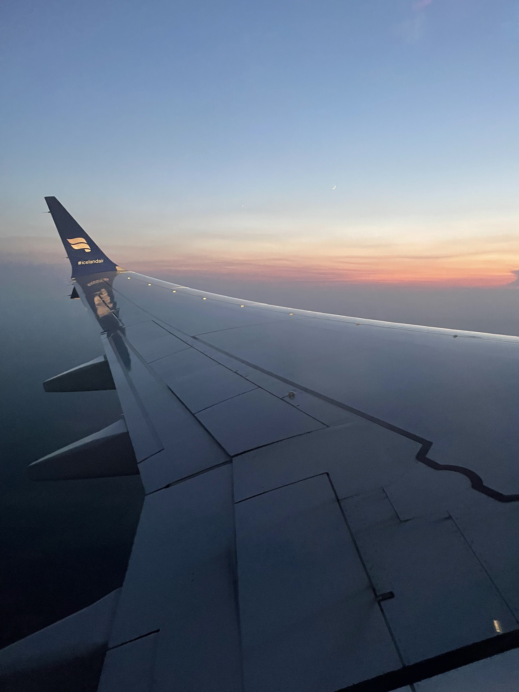
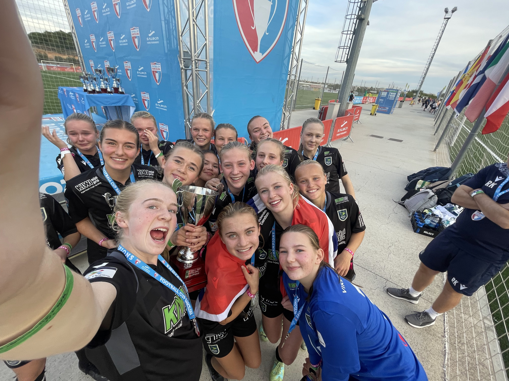
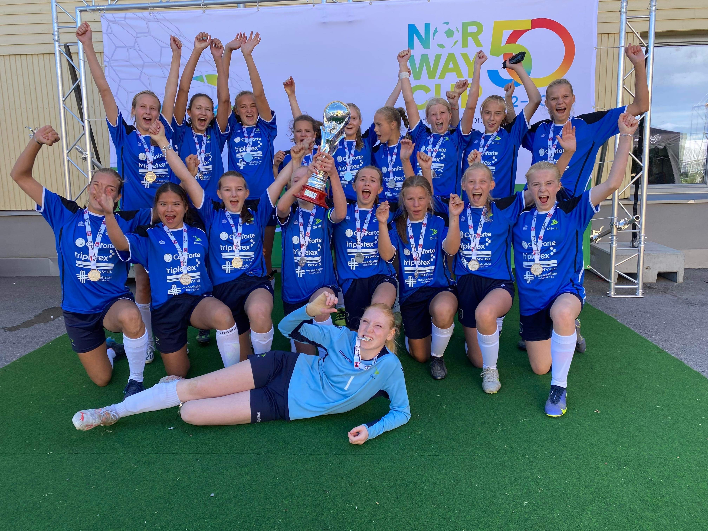

Reising
Jeg elsker å reise! Jeg har reist en del innenfor Europa men har veldig lyst til å se mer av verden også! USA er favorittlandet mitt å dra på ferie til, jeg har også vært så heldig at jeg har fått dratt dit 7 (!) ganger! Vi har vært opp og ned hele østkysten og inn til Tennessee og alle statene rundt. Totalt har jeg vært i 21 stater!
Topp 5 Steder jeg har vært:
- New York, USA
- Barcelona, Spania
- London, England
- Roma, Italia
- Athen, Hellas
Drømmereisemål:
- Japan - Tokyo og Kyoto
- USA - California
- Thailand - Bangkok
- Bahamas
- Australia - Sydney
Fotball
 Fotball har alltid vært en stor del av livet mitt. Jeg har spilt så lenge jeg kan huske. Det har gått opp og ned hvor mye jeg har spilt men jeg har alltid spilt!
Min fotballhistorie
Jeg har spilt fotball siden jeg var liten. Det startet som ren moro men i 7. klasse bestemte laget mitt å satse. Det var mye treninger men det gikk veldig bra resultatmessig, vi hadde sikkelig bra lagmoral og man gledet seg til hver trening. Det laget holdt sammen helt til for ca 1,5 år siden hvor det ble litt for seriøst for meg. På de årene fikk vi oppleve veldig mye kult hvor seier i Cup i Barcelona helt klart er øverst! Jeg spiller fortsatt men nå på et breddelag men jobber også som fotballtrener så det er fortsatt en stor del av livet mitt!
Favorittlag
Mitt favorittlag er Bodø/Glimt. Pappa er fra Bodø så det var det som var alternativet! Det er veldig gøy å se kampene deres og vi prøver å få dratt på Aspmyra når vi er å besøker bestemor og bestefar. Kuleste kampen jeg har sett er Bodø/Glimt mot Ajax på Aspmyra!